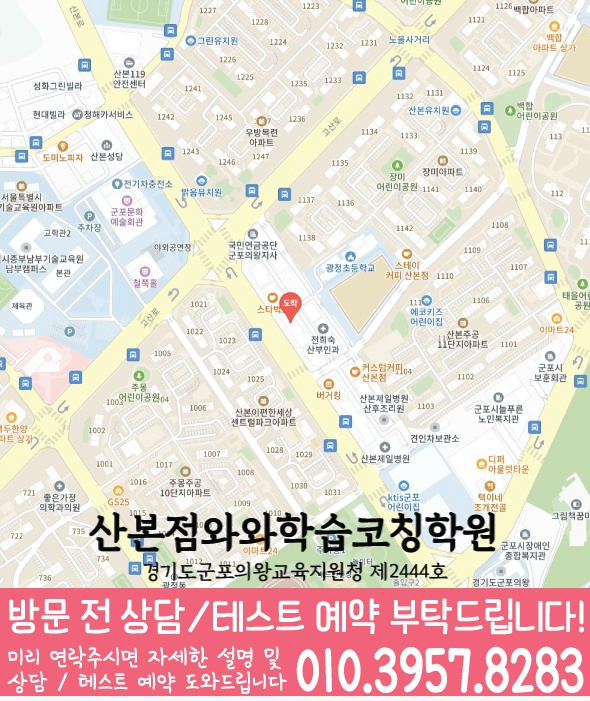

단순 진도 점검을 넘어, 영어는 문법·독해·서술형/문항 유형, 수학은 개념·유형별 약점과 오답 원인을 먼저 파악합니다.
지역별 수강 안내
산본동 고2 영어학원
방문할 지점과 수강 조건
산본점 수강 정보
- 연결 지점
- 산본점와와학습코칭학원
- 영어 수강 학년
- 초3~초6 / 중1~중3 / 고1~고2
- 방문 주소
- 경기 군포시 산본로 394 대림프라자 제 6층 제602호 와와학습코칭학원
제공된 지점 자료에서 산본점의 고2 영어 수강 학년을 확인했습니다. 현재 모집과 시간표는 상담에서 확인해 주세요.


산본점 방문 주소
경기 군포시 산본로 394 대림프라자 제 6층 제602호 와와학습코칭학원
찾아오는 길: 경기 군포시 산본로394 602-2호( 대림프라자 6층) 주차장입구가 노란색입니다. 1층에 빽다방,이삭토스트, 본죽 산본학원가 스타벅스 옆 건물 하나로마트 옆
네이버 지도에서 산본점 위치 확인 · 공통 상담 안내이미지는 그대로 읽을 수 있으며, 이미지를 누르면 확대됩니다. 작은 글씨는 확대 화면의 원본 크기로 확인하세요.
학습커리큘럼
배우는 내용과 공부의 시작점을 함께 살펴보세요
학교 진도와 현재 이해도에 맞춰 학습 범위·순서·확인 과제를 찾아보세요.
학생·학부모 교육정보
과목별 공부 방법도 함께 살펴보세요
시험 준비, 과목별 공부와 학습 습관을 구체적인 예시로 확인하세요.
경기도 군포시 산본동에서 고2 영어학원을 찾는 학생을 위해, 와와학습코칭센터 산본점은 영어·수학을 중심으로 국어와 영수(영어·수학) 학습까지 함께 점검해 성적이 오르는 학습 흐름을 설계합니다. 진단부터 개념 정리, 내신·수능형 문제풀이, 오답 관리, 학습 코칭까지 한 번에 연결하여 공부가 “언제, 무엇을, 어떻게” 해야 하는지 분명해지도록 돕습니다.
산본동 고2 수업의 핵심 포인트
고2는 내신 비중과 기출/유형 확장이 동시에 진행됩니다. 영어(어휘·문법·독해)와 수학(개념·유형·오답)을 균형 있게 관리합니다.
학년별 학습 전략(고2 포함)
초등
- 기초 연산과 어휘·독해 습관을 안정적으로 잡아 중등 준비를 탄탄히 합니다.
- 시험에 바로 쓰이는 유형 훈련으로 실수 패턴을 줄입니다.
중등
- 학교 진도와 내신 대비를 함께 관리하며 단원별 취약점을 집중 보완합니다.
- 영어는 문법·독해, 수학은 개념·유형 반복으로 점수 상승을 만듭니다.
고등(고2)
- 내신과 수능형 문제풀이를 구분해 영어·수학 학습 로드맵을 설계합니다.
- 시간 관리, 오답 패턴, 약한 단원(문법/독해·수학 단원)을 집중적으로 교정합니다.
국어·영수 보강
- 영어·수학 중심 학습 속에서도 국어 독해·문장 이해를 함께 점검해 종합 성적을 끌어올립니다.
- 영수(영어·수학) 연계 문제를 통해 사고력과 풀이 흐름을 강화합니다.
산본동 고2 영어학원으로 와와학습코칭센터 산본점을 찾고 있다면, 현재 실력과 학교 내신 흐름을 기준으로 필요한 학습을 정리해 드립니다. 상담을 통해 영어·수학(및 국어, 영수) 학습 방향을 구체적으로 안내드립니다.
센터 위치 안내
주소
경기 군포시 산본로 394 대림프라자 제 6층 제602호 와와학습코칭학원
오시는 길
대림프라자 6층 602-2호입니다. 1층에 빽다방, 이삭토스트, 본죽이 있으며, 산본학원가 스타벅스와 하나로마트 옆 건물입니다. 주차장 입구는 노란색입니다.
상담에 참고할 학교 목록
학교별 내신 수업과 수강 가능 여부는 센터에 확인해 주세요.
초등학교
곡란초등학교
관모초등학교
광정초등학교
궁내초등학교
능내초등학교
도장초등학교
둔전초등학교
산본초등학교
수리초등학교
신흥초등학교
오금초등학교
태을초등학교
한얼초등학교
중학교
곡란중학교
궁내중학교
금정중학교
도장중학교
산본중학교
수리중학교
고등학교
경기폴리텍고등학교
군포e비즈니스고등학교
군포고등학교
산본고등학교
수리고등학교
흥진고등학교
과목별 수강 가능 학년
국어
중1
중2
중3
고1
고2
영어
초3
초4
초5
초6
중1
중2
중3
고1
고2
수학
초3
초4
초5
초6
중1
중2
중3
고1
고2
과학
중1
중2
중3
사회
수강 가능 학년은 센터에 문의해 주세요.
학원 등록 정보
교육비 참고와 확인할 조건
산본점 수업료 안내
| 대상 | 과목·과정 | 수업 구성 | 안내 금액 |
|---|---|---|---|
| 초등 | 수학 | 주 2회, 1회 90분 | 140,000원 |
| 초등 | 수학 | 주 3회, 1회 90분 | 220,000원 |
| 초등 | 영어 | 주 2회, 1회 90분 | 140,000원 |
| 중등 | 수학 | 주 3회, 1회 2시간 | 325,000원 |
| 중등 | 영어 | 주 2회, 1회 2시간 | 217,000원 |
| 중등 | 국어 | 일요일 2시간 30분 | 152,000원 |
| 고등 | 수학 | 주 3회, 1회 2시간 | 350,000원 |
| 고등 | 영어 | 주 2회, 1회 2시간 | 250,000원 |
| 고등 | 영어 | 1회 3시간, 횟수 센터 확인 | 350,000원 |
| 고등 | 국어 | 일요일 3시간 | 175,000원 |
| 중·고등 | 영어·수학 AI 학습클래스 | 추가 프로그램 | 19,000원 |
센터 안내 자료에 기재된 금액입니다. 수강 가능 학년, 과목, 수업 시간과 추가 프로그램에 따라 달라질 수 있으므로 최종 교습비는 센터에 확인해 주세요.
고2 영어 상담부터 오답관리까지 이어지는 흐름
고2 영어는 내신 지문 관리, 문법 적용, 독해 속도, 어휘 누적이 함께 필요한 시기입니다. 상담에서는 현재 점수보다 어떤 지점에서 해석과 근거 판단이 흔들리는지 먼저 확인합니다.
현재 수준 확인
학교 진도, 최근 영어 시험 결과, 어려운 지문, 문법 단원, 어휘 암기 습관을 확인합니다.
문법·독해 진단
문장 구조, 구문 해석, 지문 근거 찾기, 선택지 판단 과정을 나누어 약점을 점검합니다.
플래너 실행 점검
어휘 암기, 지문 복습, 문법 문제, 오답 재풀이를 주간 계획으로 나누고 실행 여부를 확인합니다.
오답 원인 분석
틀린 문제를 어휘 부족, 해석 오류, 문법 혼동, 근거 누락으로 분류해 다음 학습에 연결합니다.
CONSULTING CHECKLIST
산본동 고2 영어학원 상담 전 체크리스트
실제 상담 전 아래 항목을 확인하면 학생에게 필요한 영어·수학 학습 방향을 더 빠르게 정리할 수 있습니다.
- 현재 교재사용 중인 교재와 진도를 확인합니다.
- 최근 시험지점수보다 반복되는 오답 유형을 확인합니다.
- 공부 시간평소 공부 시간과 숙제 수행 정도를 봅니다.
- 상담 목표성적, 습관, 오답, 시험 대비 중 우선순위를 정합니다.
STUDY GUIDE
산본동 고2 영어 학원 학습관리 포인트
산본동 고2 영어 학원을 찾는 학생이라면 고2 과정에서 필요한 영어 학습 목표를 먼저 정리하는 것이 좋습니다. 현재 학교 진도와 최근 시험 결과, 숙제 수행 습관을 함께 보면 상담 방향이 훨씬 구체적입니다.
시험 직전에 한꺼번에 외우기보다 지문별 핵심 어휘와 표현을 주간 단위로 누적 관리합니다.
감으로 해석하지 않고 주어·동사·수식어 구조를 표시해 독해 근거를 남기는 습관을 만듭니다.
본문 암기에서 끝내지 않고 빈칸, 순서, 어법, 서술형으로 바뀔 수 있는 문장을 따로 정리합니다.
경기 군포시 산본동 상담 전 체크
최근 시험지, 학교 진도, 어려운 단원, 숙제 수행 정도를 함께 정리해두면 상담에서 학생에게 필요한 학습 순서를 더 빠르게 잡을 수 있습니다.
함께 보면 좋은 학습가이드
현재 페이지의 학년·과목과 연결되는 정보성 콘텐츠입니다. 지역 페이지와 함께 읽으면 상담 준비와 학습 계획을 더 구체화할 수 있습니다.
산본동 관련 학원 페이지
현재 보고 있는 지역 안에서 센터 안내와 학년·과목별 상세 페이지로 바로 이동할 수 있습니다.
산본동 고2 영어학원 상담이 필요하신가요?
고2 영어의 현재 문법 이해도, 독해 속도, 어휘 습관, 내신 대비 계획을 정리해 상담문의로 남겨주시면 학습 방향을 더 구체적으로 확인할 수 있습니다.
상담문의수강 전에 자주 묻는 질문
산본동에 있는 별도 지점인가요?
이 동네 안내에서 연결되는 곳은 산본점와와학습코칭학원입니다. 실제 방문 주소는 경기 군포시 산본로 394 대림프라자 제 6층 제602호 와와학습코칭학원입니다.
고2 영어을 수강할 수 있나요?
제공된 지점 자료에서 산본점의 고2 영어 수강 학년을 확인했습니다. 현재 모집과 시간표는 상담에서 확인해 주세요.
교육비 표의 금액으로 바로 등록할 수 있나요?
지역 공통 참고표는 개별 지점의 확정 교습비가 아닙니다. 교습비 안내 자료에서 과목당 금액과 수업 시간·횟수·교재비를 확인하고 최종 비용을 상담에서 확인하세요.
안내 자료 대조: . 현재 모집·시간표·최종 비용은 지점에서 확인해 주세요.
산본점 사진 안내

산본점 폴더로 제공된 사진입니다. 촬영 시점과 현재 공간 구성이 다를 수 있습니다.